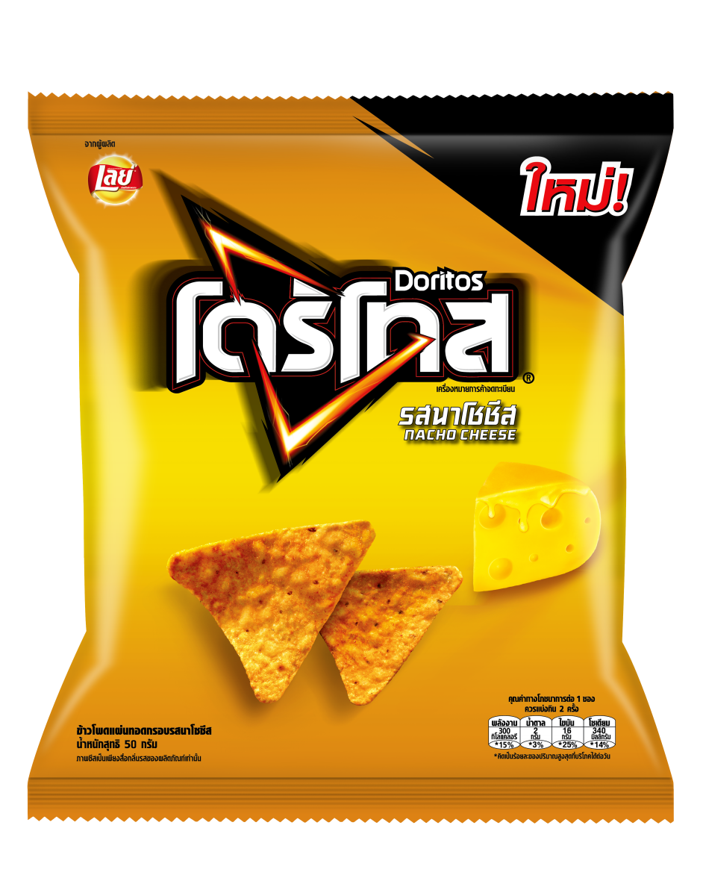
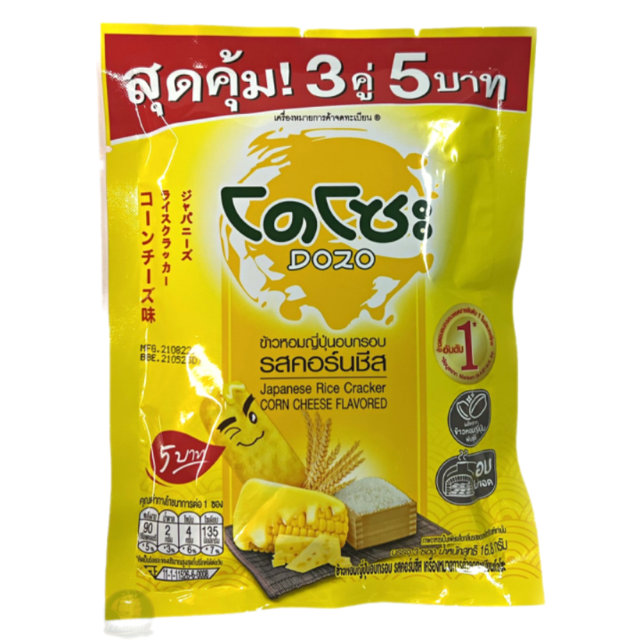
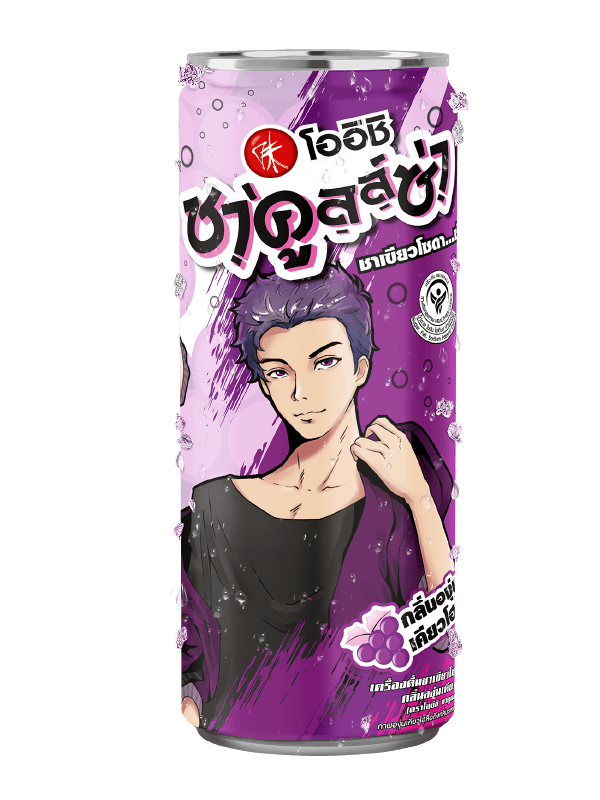

<ion-header>
  <ion-toolbar color="primary">
    <ion-title>รายการอาหาร</ion-title>
  </ion-toolbar>
</ion-header>

<ion-content>
  <ion-card>
    <ion-card-header>
      <ion-card-title>ออเดอร์ที่ลูกค้าสั่ง</ion-card-title>
    </ion-card-header>

    <ion-card-content>
      <ion-list>
        <!-- รายการอาหาร -->
        <ion-item>
          <ion-avatar slot="start">
            
          </ion-avatar>
          <ion-label>
            <h2>โดริโทส</h2>
            <p>ราคา: 15 บาท</p>
          </ion-label>
        </ion-item>

        <ion-item>
          <ion-avatar slot="start">
            
          </ion-avatar>
          <ion-label>
            <h2>โดโสะ</h2>
            <p>ราคา: 20 บาท</p>
          </ion-label>
        </ion-item>

        <ion-item>
          <ion-avatar slot="start">
            
          </ion-avatar>
          <ion-label>
            <h2>โออิชิ องุ่นเคียวโฮ</h2>
            <p>ราคา: 14 บาท</p>
          </ion-label>
        </ion-item>

        <!-- สรุปราคา -->
        <ion-item>
          <ion-label>
            <h2>รวมทั้งหมด</h2>
            <p> 49 บาท</p>
          </ion-label>
        </ion-item>
      </ion-list>
    </ion-card-content>
  </ion-card>

  <!-- ปุ่มย้อนกลับไปหน้า Jaokongran -->
  <ion-button expand="block" color="primary" (click)="goBackToJaokongran()">
    ย้อนกลับ
  </ion-button>

</ion-content>
